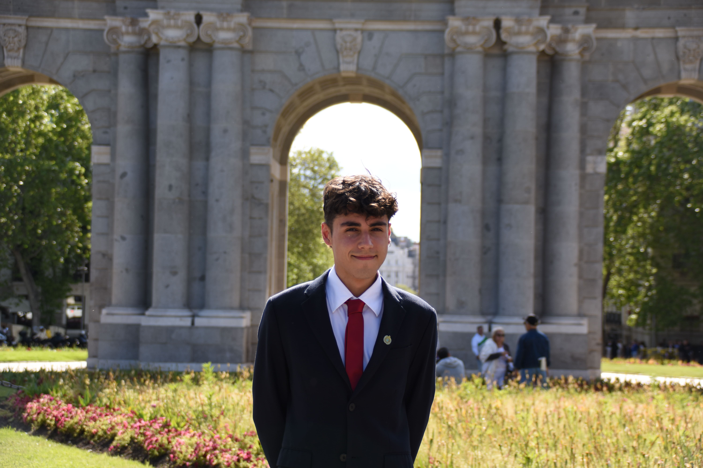

Miembros del Grupo
Sergio Celma Sosa
Correo: scelma@ucm.es
Aficiones: Me gusta mucho el cine, los deportes, ir a conciertos, viajar y descubrir sitios nuevos y pasar tiempo con mis amigos, pero sin duda de lo que más disfruto es de comer y descubrir nuevos restaurantes.
Pablo Ferrando Galán
Correo: paferr04@ucm.es
Aficiones: Ir a la montaña, leer por las noches y salir a correr.
Gabriel Omaña García

Correo: gabomana@ucm.es
Aficiones: Además de la informática y la programación, me apasionan la política y las relaciones internacionales.
Gonzalo Rodríguez Martínez
Correo: gonzar01@ucm.es
Aficiones: Los videojuegos, ver deportes de invierno y acostarme programando es mi estilo de vida.